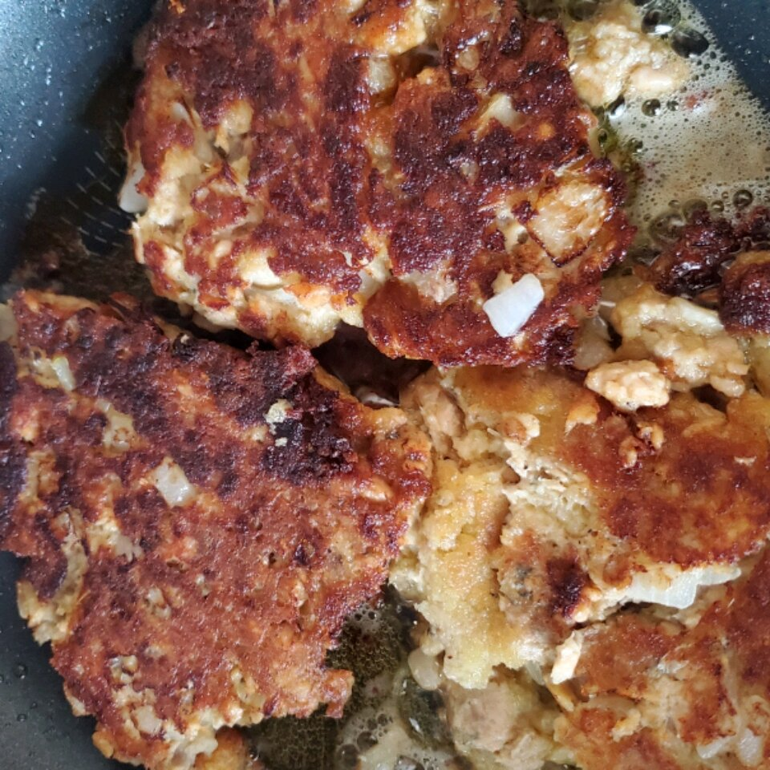

Salmon Patties I

Ingredients
-
1
(14.75 ounce) can canned salmon
-
1
egg
-
¼
cup chopped onion
-
½
cup seasoned dry bread crumbs
-
1
tablespoon olive oil
-
-
Drain and reserve liquid from salmon. Mix egg, onion, bread
crumbs and salmon together
-
into patties. If mixture is too dry to form into patties, add
reserved liquid from salmon
-
a frying pan, heat olive oil. Place patties in pan. Brown on
each side, turning gently. Drain on paper towels and serve.
Learn More about Salmon Patties I